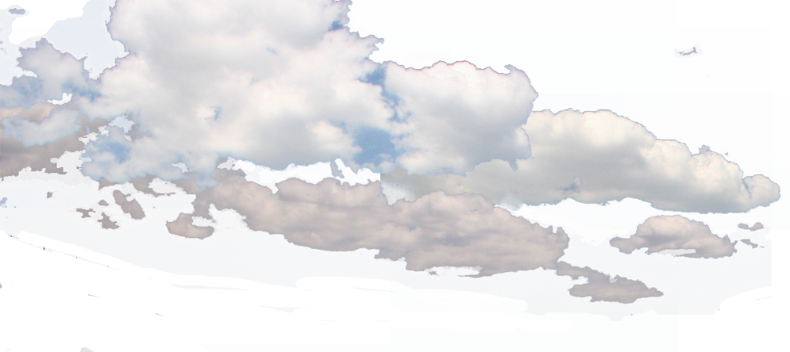

<!DOCTYPE html>
<html>
   <head>
    <title>Rings Of Fire</title>
    <link rel="stylesheet" type="text/css" href="style.css"/>
   </head> 
   <script>
    let r = document.querySelector(":root");

    function SelectFilter() {
      // Get the styles (properties and values) for the root 
      // url(#FilterType)
      let rs = getComputedStyle(r);
      // Alert
      alert("The value of --filterType is: " + rs.getPropertyValue("--filterType"));
      console.log("🚀 ~ file: index.html:16 ~ SelectFilter ~ rs:", 5+8)

      
       // Set the value of variable --blue to another value (in this case "lightblue")
      //  if (rs.getPropertyValue == "--filterType"){
        // r.style.setProperty("--filterType", wave);

      // }
    };

   </script>
   <body>
    <!-- <button class="button" type="button" onclick="SelectFilter()">Change Filter</button> -->
    <div class="circle"></div>
    <div class="circle"></div>
    <div class="circle"></div>
    <!-- <div class="circle"></div> -->
    <svg viewBox="0 0 180 100">

        <!-- Noise filter -->
        <filter id="noise" x='0%' y='0%' width='100%' height='100%'>
            <feTurbulence baseFrequency="0.01 0.4" result="NOISE" numOctaves="2"/>
	  <feDisplacementMap in="SourceGraphic" in2="NOISE" scale="20" xChannelSelector="R" yChannelSelector="R"/> 
            </feTurbulence>
        </filter>

        <!-- Wave -->
        <filter id="wave" width="100%" height="100%" x="0%" y="0%" >
            <feTurbulence type="turbulence" baseFrequency="0.0547184" id="turbulence" numOctaves="1" result="turbulence" seed="5">
            <animate id="noiseAnimate2" attributeName="baseFrequency" values="0;.1;0,0" from="0" to="100" dur="10s" repeatCount="indefinite"/>
            </feTurbulence>
            <feDisplacementMap in="SourceGraphic" in2="turbulence" scale="10" xChannelSelector="R" yChannelSelector="R"/>
            </filter>


            <!-- <foreignObject width="100%" height="100%"> -->
            <!--  -->
            <!-- </foreignObject> -->
<!-- Second static -->
<filter id="static" width="100%" height="100%" x="0%" y="0%" >
  <feTurbulence type="turbulence" baseFrequency="0.0147184" id="turbulence" numOctaves="10" result="turbulence" seed="5">
  <animate id="noiseAnimate2" attributeName="baseFrequency" values="6;.8;15,9" from="0" to="100" dur="8s" repeatCount="indefinite"/>
  </feTurbulence>
  <feDisplacementMap in="SourceGraphic" in2="turbulence" scale="40" xChannelSelector="R" yChannelSelector="R"/>
  </filter>

            <!-- Sky -->
         
    <filter id="HueRotate90" filterUnits="objectBoundingBox" 
            x="0%" y="0%" width="100%" height="100%">
      <feColorMatrix type="hueRotate" in="SourceGraphic" values="90"/>
    </filter>
    <filter id="LuminanceToAlpha" filterUnits="objectBoundingBox" 
            x="0%" y="0%" width="100%" height="100%">
      <feColorMatrix type="luminanceToAlpha" in="SourceGraphic" result="a"/>
      <feComposite in="SourceGraphic" in2="a" operator="in" />
    </filter>
    </svg>

   </body>
</html>